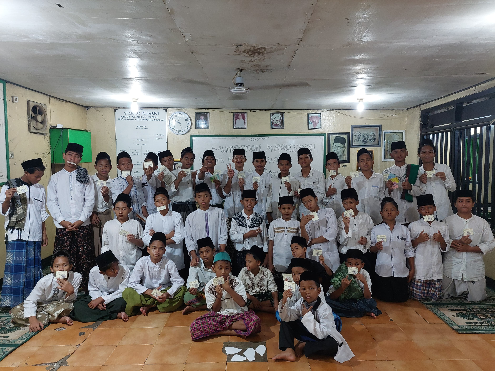
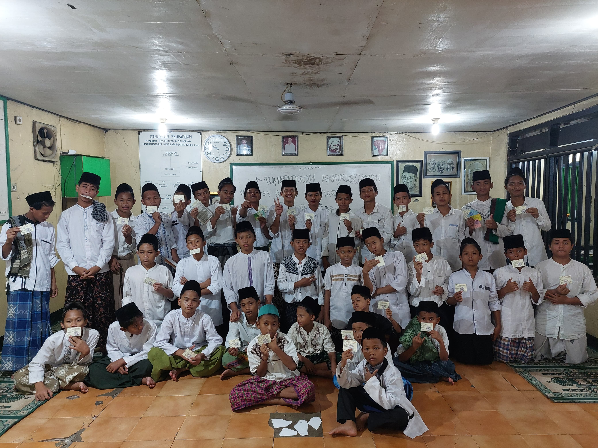

Pendiri Pondok Sabilil Muttaqien yang memiliki visi besar dalam pendidikan Islam.
Mewujudkan generasi santri yang berakhlak mulia, berilmu, dan siap menghadapi tantangan zaman dengan nilai-nilai Islam.


 
